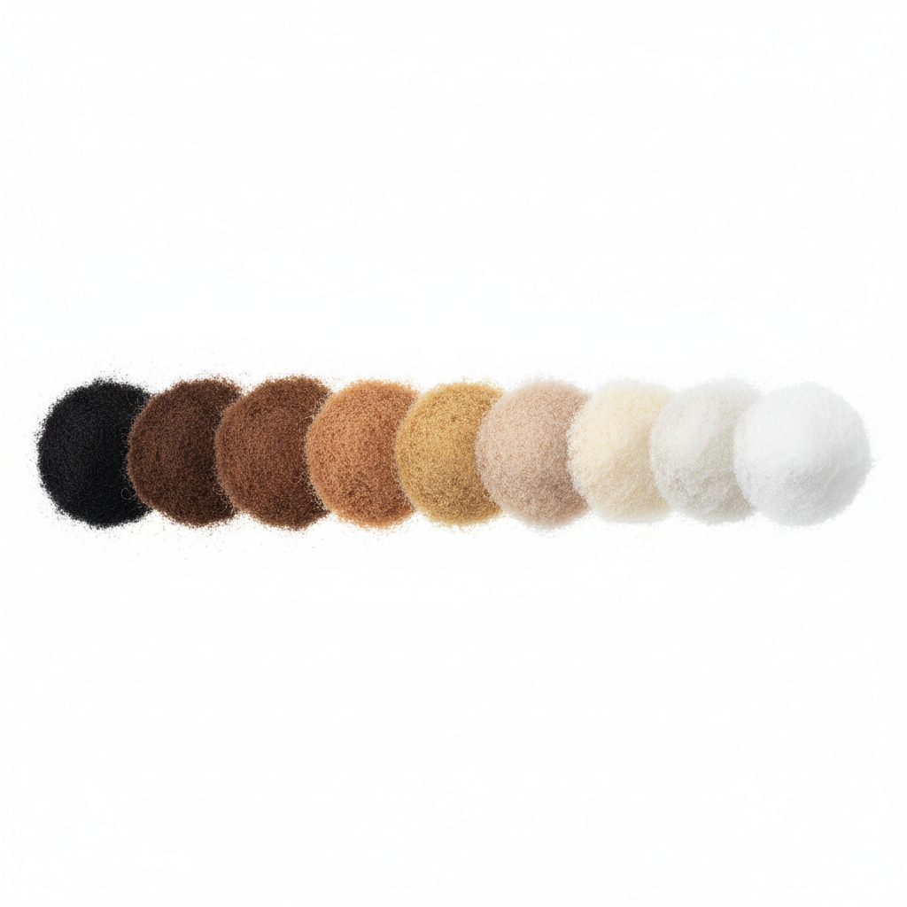
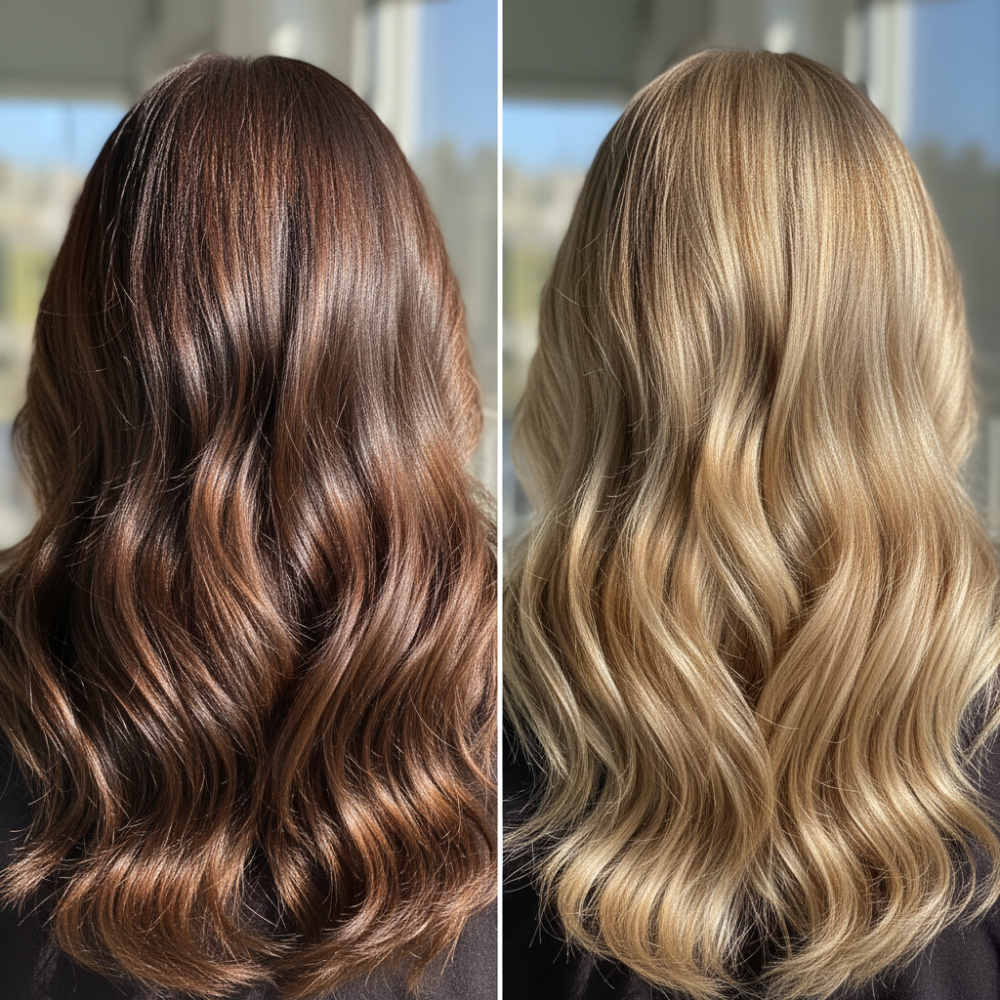

Why Shade Selection Matters
The difference between an obvious hair fiber application and one that looks completely natural often comes down to one thing: choosing the right shade. Even the best quality hair fibers will look unnatural if the shade doesn't match your hair properly.
With Halo Fibers' 9 natural shades, you have the flexibility to find your perfect match—or even blend shades for a custom color.
Pro Tip
Always match your hair color at the roots, not the ends. Hair at the roots is typically darker and less sun-damaged, giving you a more accurate match.
The 9 Halo Fibers Shades Explained

Black
Perfect for naturally black or very dark brown hair. The deepest shade in our collection.
Dark Brown
Ideal for rich chocolate brown hair. One of our most popular shades.
Medium Brown
Works beautifully with medium brown hair tones. Great for mixing with dark or light brown.
Light Brown
Perfect for lighter brown hair with warm undertones.
Auburn
For reddish-brown hair. Adds warmth and dimension to your look.
Medium Blonde
Matches golden blonde and honey-toned hair perfectly.
Light Blonde
For platinum and very light blonde hair.
Gray
Designed for salt-and-pepper or fully gray hair.
White
For pure white or silver hair.
5 Expert Shade Matching Tips
1. When In Doubt, Go Slightly Darker

If you're between two shades, choosing the slightly darker option usually looks more natural. Hair fibers applied to thinning areas create density, which naturally appears a bit darker than individual hair strands.
2. Match Your Roots, Not Your Ends
Your hair ends are often lighter due to sun exposure and styling. Always match the color at your roots for the most natural blend.
3. Consider Mixing Shades
Many customers achieve their perfect match by mixing two shades. Try applying a darker shade to the roots and a lighter shade to areas with more sun exposure. This mimics natural hair dimension beautifully.
4. Test in Natural Light
Always check your shade match in natural daylight, not just indoor lighting. Artificial light can distort color perception.
5. Account for Wet vs. Dry Hair
Hair appears darker when wet. Choose your shade based on your dry, styled hair color for the most accurate match.
Still Not Sure Which Shade to Choose?
We offer all 9 shades so you can find your perfect match. Our Ultimate Bundle is perfect if you want to test multiple shades or mix them for a custom color.
View All ShadesThe Bottom Line
Choosing the right hair fiber shade is crucial for natural-looking results. Remember to match your roots, consider going slightly darker if unsure, and don't be afraid to experiment with mixing shades.
With Halo Fibers' 9 natural shades and our 30-day money-back guarantee, you can find your perfect match risk-free. Start shopping today and discover the confidence that comes with perfectly matched, natural-looking hair.